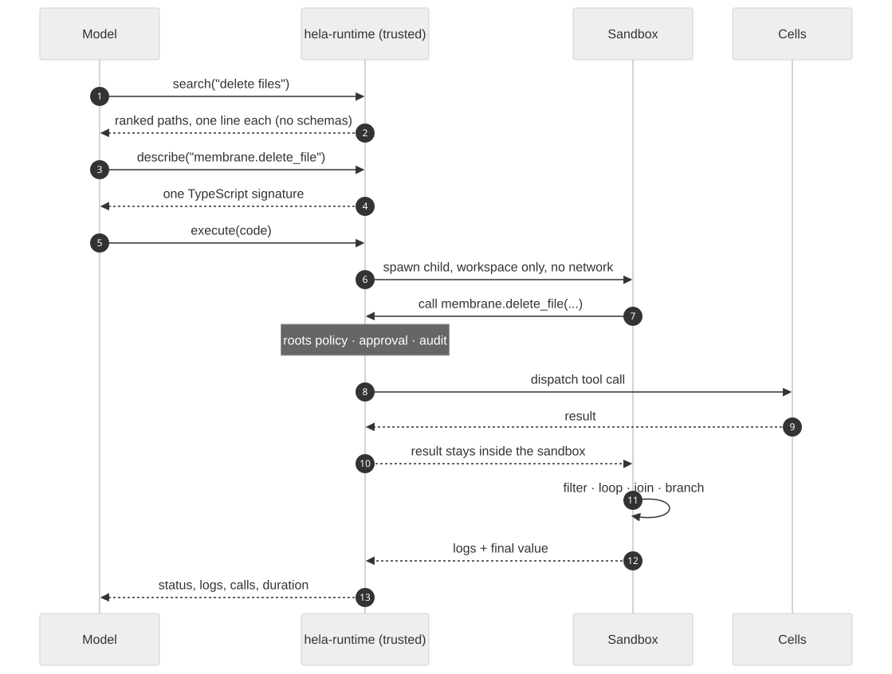

Code Mode for HeLa: research and design
Reference
docs/code-mode-research.md
Original source language. Download source · All documents
Status: research. Nothing here is implemented.
The question: should the ecosystem expose one code-execution tool instead of (or beside) hundreds of MCP tool schemas — and what would that cost in security and complexity?
Two independent labs published the same pattern within six weeks of each other, from very different platforms. That coincidence is the strongest signal in this document. The evidence is thinner than the blog posts suggest, and the sandbox is the whole problem.
1. What Code Mode is
The model receives one tool whose input is source code. That code calls typed functions representing the connected tools, runs in a sandbox, and returns only its final output. Intermediate results never enter the model's context.
direct tool calling code mode
───────────────── ─────────
model → tool call → result model → code ──┐
model → tool call → result ├─ sandbox: call, filter, loop
model → tool call → result ├─ sandbox: call, join
model → answer └─ return only the answer
Three claims are made, and they fail or succeed independently:
- Context economy — schemas and intermediate results stop competing with the task.
- Composition — loops, branches, joins and retries move out of the message loop.
- Accuracy — models write better code than tool-call JSON, because they have seen more of it.
Claim 3 is repeated most and evidenced least.
2. Evidence, and what each source actually shows
| Source | Claim | What it demonstrates | Confidence |
|---|---|---|---|
| Anthropic, Code execution with MCP (Nov 2025) | 150k → 2k tokens, "98.7%" | One worked example with a generated tool-file tree; illustrative, not a benchmark. Their platform docs separately claim 35–75% input-token reductions on multi-step workflows — the more defensible number | Direction yes, magnitude no |
| Cloudflare, Code Mode (Sep 2025) | "Striking" results; more and more complex tools as TypeScript | Qualitative engineering report; no published eval or failure rates | Medium |
| CodeAct (ICML 2024) | Code actions beat JSON/text "up to 20%" | 17 LLMs, API-Bank plus a new benchmark | High for code-as-action; not MCP-specific |
None of them quantify: how often generated code is wrong where a tool call would have succeeded, what the sandbox costs to operate, or who reviews code that mutates state.
3. What it would cost here, measured
Measured against this installation's live catalog, not a hypothetical:
| Metric | Value |
|---|---|
| Reachable tools in one session | 305 |
tools/list schema size |
161 KB |
| Estimated tokens (bytes ÷ 4) | ≈ 40,000 |
| Average schema per tool | 528 B |
| Largest single schema | 4.9 KB (logo_workflow) |
| Declared across all cells | 591 (286 shadowed by bare-name collisions) |
40k tokens is roughly a fifth of a 200k window, paid before the first request. Namespacing every tool would make the number worse, not better — 591 schemas. That is the real motivation: not that code mode is fashionable, but that this catalog is too large to inline.
Two honest caveats:
- Providers cache tool definitions (Anthropic prompt caching, OpenAI automatic caching), so the marginal cost is lower than 40k per turn. The context window is still occupied, and cache reads are cheap but not free.
- The saving only converts to wall-clock or accuracy if the model actually needed most of those schemas. For a single-tool task, inlining 305 tools versus loading one costs the same either way — and code mode adds a sandbox and a failure mode for nothing.
4. Critiques worth taking seriously
- You still need the types. Code that calls
membrane.read_file(path, encoding)must know the signature. Withoutdescribe, models hallucinate parameters; with it, you have traded a schema block for a discovery round-trip. Neither is free. - Debugging moves to the model. A failed tool call returns a tool error. Failed code returns a stack trace through a sandbox; the retry burns tokens on the whole program, not one call.
- Reviewability drops by default. Tool calls are individually visible in a transcript; one execution that makes forty calls is not, unless the runtime logs each proxied call. Auditability must be designed in, not inherited.
- Prompt injection becomes code execution. If any tool output can steer the model, the blast radius is now "whatever the sandbox allows" instead of "whatever the next tool call allows". This is the argument for keeping credentials and network out of the sandbox.
- It rewards strong models. CodeAct shows gains across 17 models, but the spread is wide; a weaker model writing a 40-line program that half-works is worse than three tool calls.
- Sandbox dependencies rot. Native modules (
isolated-vm) must be rebuilt per Node ABI; WASM runtimes are stable but slow. The cheapest robust option is an OS-level boundary around a plain Node child process.
5. Three designs
A. Execute + discover inside the runtime (recommended). Two new tools beside the existing
ones: hela.execute({code}) and a discovery path (search, describe). Every sandbox call
proxies back to the runtime, which applies the same roots policy, approvals and audit as a
direct call.

Source: 09-code-mode-flow.mmd.
B. Filesystem of tools. Generate servers/<cell>/<tool>.ts plus index.ts and let the
agent read what it needs. Anthropic's shape. Cheapest to bolt on, but it needs a readable
filesystem inside the sandbox and costs more tokens per discovery than one describe call.
C. Keep direct calls. Correct for small catalogs; at 305 tools it is what we do now.
A and B compose: A's describe can serve the same generated text B writes to disk.
6. Trust boundary

Source: 10-code-mode-boundary.mmd.
The rule that makes the design coherent: capabilities live in the parent; the sandbox holds none. No network, no host filesystem beyond a per-execution workspace, no environment, no credentials. Tool calls cross one RPC channel that the parent validates. If the sandbox is compromised, an attacker gets a workspace and a list of tool calls that policy already allows.
7. Sandbox options on Linux
| Option | Isolation | Cost | Verdict |
|---|---|---|---|
node:vm in-process |
none — documented as not a security boundary | <1 ms | Only for trusted snippets; never for model output |
| Node permission model | fs/net/child-process gating | ~25 ms | Useful hardening; still not a security boundary |
| Bun | none by default | low | Reject |
| Deno subprocess | capability-based, deny by default | 30–50 ms | Strong ergonomics; ships a second runtime |
| QuickJS (WASM) | near-perfect (software fault isolation); a guest loop or OOM cannot kill the host | 1–3 ms, slow compute | Excellent fast path for pure data work; async is limited to one concurrent bridge call |
isolated-vm |
V8 isolate, memory-isolated | 2–5 ms; native build per ABI | Avoid: maintenance mode, fragile C++, a V8 panic takes the host process down with it |
Child process + bwrap/seccomp/Landlock |
kernel-enforced namespaces, fs and net | 10–25 ms | Strongest for orchestration; Linux-only |
A two-tier split is possible — route pure data work to an in-process QuickJS isolate, and only orchestration to a process sandbox. It buys ~20 ms on the cheap path and doubles the execution surface to maintain. Phase 1 should ship one tier; add the fast path only if measurement shows the process start dominates real tasks.
Recommendation: child process + bwrap/Landlock profile + stdio RPC, with the
parent enforcing time, memory, call budget and output size. It is not containment against a
kernel exploit; it is containment against rm -rf ~, curl | sh, and runaway loops — which
is the realistic threat for a local, single-user agent.
Three details that are cheap and easy to forget: mark inherited file descriptors
O_CLOEXEC and close_range(3, ~0) before exec (a leaked socket is a channel); run with
--unshare-net, --cap-drop ALL, read-only /usr and tmpfs /tmp; and cap tool calls
per execution (30–50) so an infinite loop cannot hammer an external API even while inside
the time limit.
Note what this machine already grants: the nucleus cell runs arbitrary shell commands today. Code mode does not add a capability class here; it adds a narrower, audited interface and a place to enforce limits that raw shell access does not have. A sandbox weaker than the existing shell would be theatre.
8. Progressive discovery
Loading 305 signatures up front recreates the problem. Two tools instead:
search(query, {limit})→ ranked{path, cell, tool, one_line}, no schemas.describe(path)→ one TypeScript signature plus its doc comment.
Both are generated from the same source: a tools.d.ts built at boot from each cell's
tools/list schema. The file is the catalog's single representation — search indexes it,
describe serves a slice, and the sandbox can be handed the declarations it asked for.
Detail levels (name / signature / full) matter: triage does not need parameter docs. Names must be unique for paths to exist, which is the concrete argument for turning namespacing on: 286 declared tools have no addressable identity today because a later cell shadows the bare name.
9. Execution contract
hela.execute({ code, timeout_ms?, max_calls? })
→ { status: "ok" | "error" | "timeout" | "denied",
result, logs,
calls: [{ path, ms, ok }],
duration_ms }
Enforced by the parent, not the sandbox: wall clock (default 30 s), output (256 KB, then truncate with a marker), call count (default 50), memory (rlimit/cgroup).
Failures are data. Sandbox error, tool error and policy denial all return a structured
status so the model can retry or report, and the host never dies from generated code.
10. Security model
| Threat | Mitigation | Residual |
|---|---|---|
| Injected code exfiltrates files | no network, workspace-only fs, roots policy per call | data can be written into an allowed root and read later |
Destructive calls (delete_file, archive extract) |
per-tool approval; mutating tools denied by default in code mode | approved code can still be wrong |
| Resource exhaustion | time, call budget, memory, output caps | legal-but-heavy work still costs CPU |
| Secrets reachable from code | credentials stay in the parent; bindings, not env | a tool returning secrets leaks them into logs |
| No audit trail | every RPC logged: path, args digest, duration, execution id | logs hold digests, not payloads |
Approval fatigue is the realistic failure: a prompt people click through is not a control. Read-only tools should run unprompted; only mutations should stop.
11. Implementation plan
Phase 1 — read-only, no approvals:
code-mode/catalog.mjs: unique path per tool from livetools/list; one-line summary and full signature per tool.code-mode/search.mjs: token-overlap or BM25 over name + description. No embeddings.code-mode/executor.mjs: child process, stdio RPC,bwrapprofile (--unshare-net,--cap-drop ALL,--tmpfs /tmp, read-only system paths),close_rangebefore exec, kill on timeout.- Register
hela.executeandhela.describebehindHELA_CODE_MODE=1. - Tests: escape attempts (fs outside workspace,
fetch,process, infinite loop, memory bomb) and golden multi-step tasks.
Phase 2: approval policy for mutating tools; append-only audit log; --dry-run returning
planned calls without executing them.
Phase 3: snippets — save a successful execution as a skill under
~/.local/share/hela/snippets with a SKILL.md, discoverable by search. This is the part
that compounds: capability grows without schemas growing.
Measure before/after on three fixed tasks: schema bytes in context, model-mediated calls, wall time, wrong-tool rate. If the schema saving does not show up as wall-time or error-rate improvement, stop at phase 1.
12. What would make this not worth doing
- If client-side caching keeps schemas out of context, claim 1 mostly evaporates and only composition remains.
- If HeLa's task mix is mostly single-tool, code mode adds a sandbox for nothing. Measure the mix first.
- If the sandbox ends up in-process, the honest description is "no sandbox", and approvals stop being optional.
Sources
- Cloudflare, Code Mode: the better way to use MCP — https://blog.cloudflare.com/code-mode/
- Cloudflare, Code Mode and How Code Mode works — https://developers.cloudflare.com/agents/tools/codemode/
- Anthropic, Code execution with MCP — https://www.anthropic.com/engineering/code-execution-with-mcp
- Anthropic platform docs, Advanced tool use (search tools, programmatic tool calling) — https://docs.anthropic.com/en/docs/build-with-claude/tool-use
- Wang et al., Executable Code Actions Elicit Better LLM Agents (CodeAct, ICML 2024) — https://arxiv.org/abs/2402.01030